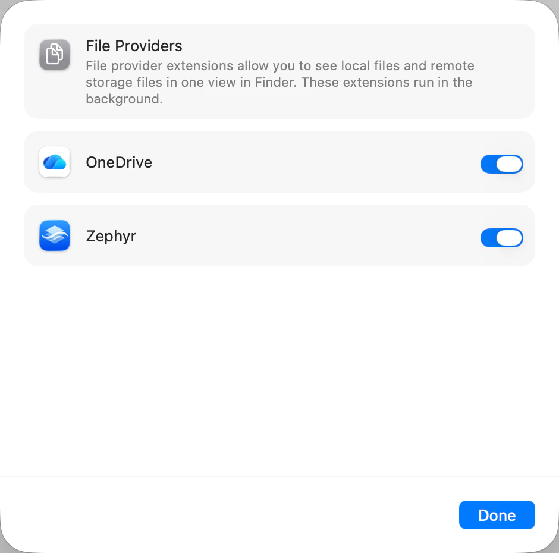

macOS asks you, not Zephyr, whether an app may put files in Finder. Until you switch Zephyr on under File Providers, a linked account syncs but never appears.
Install Zephyr rather than dragging it out of a downloaded disk image. macOS runs a downloaded app from a temporary copy of its own and won’t register a file provider for one, so Zephyr never reaches the File Providers list at all. See If your Dropbox doesn’t appear in Finder.
Link a Dropbox account first. Zephyr only appears in the File Providers list once there is an account to show, so the switch you’re looking for isn’t there yet if you haven’t linked one. See Link your Dropbox account.
Choose Apple menu > System Settings, click General in the sidebar, click Login Items & Extensions, then click File Providers.
Turn on Zephyr.
Open a new Finder window. Your Dropbox appears in the sidebar under Locations. If it isn’t there, Finder may be hiding cloud locations — see If your Dropbox doesn’t appear in Finder.

Note: Zephyr watches for this and stops asking as soon as you’ve done it. If the warning is still showing, click the Zephyr icon in the menu bar — the check runs again each time the panel opens.
Zephyr is what watches Dropbox for changes, so Finder only learns about a change made on another device while Zephyr is running. Letting it open at login is what keeps that true without you thinking about it — see Keep Zephyr running in the background.